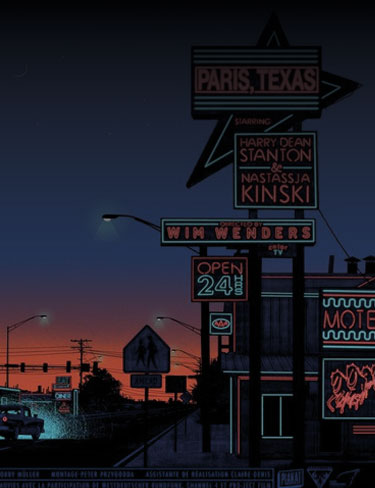
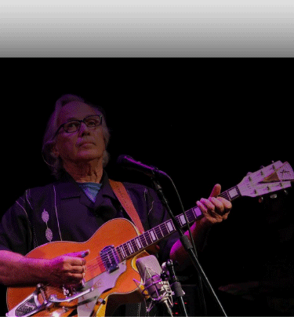
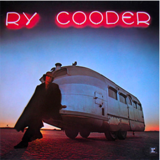
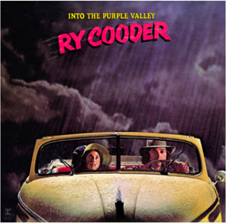
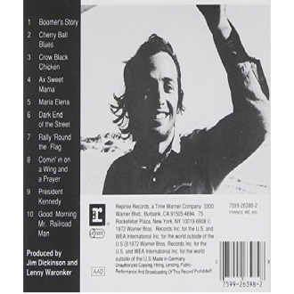

PARIS
TEXAS

A
MOOVIE
OF
EXEPTION
Synopsis
TRAVIS wanders alone in the Texas desert. He’s destination: PARIS , a small town in the united states where his parents made love for the first time. Once there, he faints and wakes up in the hospital. The doctor, unable to get a word out of him, contacts his BROTHER , Walt. He latter brings Travis back home where he finds Hunter, his eight years old SON , who he ABANDONNED four years earlier for paris.
Portrait Of Wilhelm Wenders «Will» German director,
film producer, vscreenwriter and photographer.
WHILHELM
WENDERS
Director
WILHELM WENDERS , known as Wim Wenders, born August 14, 1945 in Düsseldorf, Germany. He is a GERMAN director, producer, screenwriter and photographer. He’s one of the major representatives of the new German cinema of the years 1960-70. Since 1996, he is PRESIDENT of the prestigious European Film ACADEMY , in Berlin, the capital of germany.

Picture from the movie Paris Texas
TWO
ARTIST
A
FEATURING

Photography of Ry Cooder
during a concert playing the guitar
MUSIC
BY
RY
COODER
WHO
IS RY
COODER
Ryland Peter "RY" Cooder is a MUSICIAN From America, He’s also one of the best GUITAR player in the World. He’s also a really famous songwriter, film score COMPOSER ,record, product and have an interest in a lot of TRADITIONAL music, and he heaven havve colaborate with many traditional musicians from a lot of countries around the entire WORLD
ONE
MAN
AN
ARTWORK
Dyscography

Ry Cooder
From 1872

Into The Purple Valley
From 1872

Boomer Story
From 1972
Photography of Ry Cooder
during a concert playing the guitar
A
STYLE
OF
MUSIC
Gender
PARIS TEXAS is an album made by Ry Cooder for the moovie of the same name, Paris Texas made by Whilhelm Wenders. It’s a true piece of art just by him self. A contraction of honney for the hear. A perfect mix off BLUES and COUNTRY music wich sound soaring and soft. A perfect soundtrack for the beauty of the picture. The musician chooses a RESONATOR guitar, from the Dobro brand, offering echo effects found in the blues. The TALENT of Ry Cooder make no single doubt .